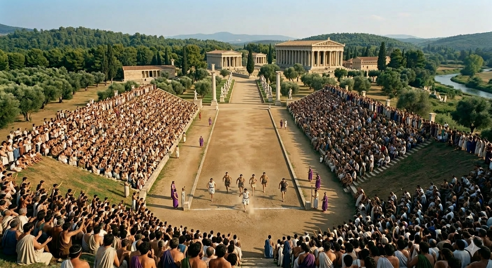

Originea și importanța competițiilor sportive din Grecia Antică

Jocurile Olimpice din Antichitate au fost unele dintre cele mai importante evenimente sportive și religioase din Grecia Antică. Ele se desfășurau în orașul sacru Olympia, situat în regiunea Elis, și erau dedicate în exclusivitate zeului Zeus, părintele zeilor și al oamenilor. Această locație nu era aleasă întâmplător, fiind considerată un punct de intersecție între lumea muritorilor și voința divină.
Atmosfera din timpul jocurilor era una de o intensitate copleșitoare, transformând mica vale a Alfeului într-un furnicar uman. Zeci de mii de pelerini, negustori, filosofi și artiști călătoreau săptămâni întregi pentru a fi martori la momentul în care „areté” (excelența) era demonstrată pe viu. Jocurile nu începeau cu sportul, ci cu ritualuri de purificare și sacrificii monumentale la marele altar al lui Zeus, unde se ardeau ofrande în văzul tuturor. Era o perioadă în care timpul părea să se oprească, iar identitatea de cetățean al unui oraș-stat era secundară celei de membru al marii familii elene.
Dincolo de spectacolul fizic, jocurile promovau un ideal educațional și filosofic profund numit „Gymnasion”. Grecii credeau cu tărie că un spirit cultivat nu poate locui decât într-un corp sănătos și armonios dezvoltat. Astfel, pregătirea atleților dura cel puțin zece luni înainte de eveniment, fiind supravegheată de magistrați riguroși numiți *hellanodikai*. Aceștia nu verificau doar forța brută, ci și conduita morală a participanților, asigurându-se că niciun trișor sau om fără onoare nu pătează nisipul stadionului sacru. Această căutare a perfecțiunii a lăsat moștenire omenirii conceptul de fair-play și respectul necondiționat față de adversar.
Competițiile aveau loc o dată la patru ani și adunau sportivi din toate cetățile grecești, de la malurile Mării Negre până în îndepărtata Sicilie. Participarea la aceste jocuri era considerată o mare onoare și un simbol al curajului, dar și al disciplinei de fier necesare pentru a atinge gloria olimpică.
Atleții concurau în diferite probe sportive care testau viteza, forța și rezistența, adesea în condiții de arșiță extremă. Jocurile nu erau doar competiții pentru medalii invizibile, ci o metodă prin care grecii își onorau zeii prin frumusețea și puterea corpului uman, considerat o capodoperă a creației divine.
În timpul jocurilor avea loc armistițiul olimpic, ceea ce însemna că toate conflictele dintre cetățile grecești erau suspendate. Acest pact sacru sublinia faptul că pacea și cultura sunt valori superioare războiului, oferind un moment de respiro necesar într-o lume marcată de tensiuni politice constante.
Deși câștigătorii nu primeau bani, gloria și respectul dobândite erau imense, depășind orice valoare materială. Aceștia primeau coroana din frunze de măslin (kotinos) și, la întoarcerea în cetatea natală, erau primiți prin breșe făcute special în zidurile orașului, semn că o cetate care dă un campion olimpic nu mai are nevoie de fortificații pentru a fi protejată.